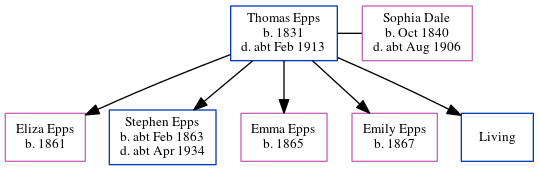

Thomas Epps 1831 - c1913
[ Home ] | [ Calendar ] | [ Surnames Index ] | [ Errors ] | [ Family History ]Thomas Epps, the husband of Sophia Dale (the three times great-aunt of Nigel Horne), was born in Chilham, Kent, England in 18311,2,3,4,5,6,7,8 and married Sophia (with whom he had 5 children: Eliza, Stephen, Emma, Emily and Edward, along with 1 surviving child) at St Mary, Chartham, Kent, England on 24 Dec 185610.
During his life, he was living at his birthplace in 18411; in Thanington, Kent, England in 18612; in Chartham in 18713; at Dog Kennel House in Chartham on 2 Apr 187114; in Chartham in 18814 and in 18915; at Milton Cottage in Chartham on 5 Apr 189113; in Thanington in 19016; at Marlowe Terrace in Thanington on 31 Mar 190112; and in Thanington on 2 Apr 19117.
He died c. Feb 1913 in Canterbury, Kent, England8,9 and was buried at St Nicholas in Thanington on 26 Feb 191311.
Children
- Eliza was born in 1861
- Stephen was born c. Feb 1863
- Emma was born in 1865
- Emily was born in 1867
Citations
- 1841 England Census Online publication - Provo, UT, USA: The Generations Network, Inc., 2006.Original data - Census Returns of England and Wales, 1841. Kew, Surrey, England: The National Archives of the UK (TNA): Public Record Office (PRO), 1841. Data imaged from the National
- 1861 England Census Online publication - Provo, UT, USA: The Generations Network, Inc., 2005.Original data - Census Returns of England and Wales, 1861. Kew, Surrey, England: The National Archives of the UK (TNA): Public Record Office (PRO), 1861. Data imaged from the National
- 1871 England Census Online publication - Provo, UT, USA: The Generations Network, Inc., 2004.Original data - Census Returns of England and Wales, 1871. Kew, Surrey, England: The National Archives of the UK (TNA): Public Record Office (PRO), 1871. Data imaged from the National
- 1881 England Census Online publication - Provo, UT, USA: The Generations Network, Inc., 2004. 1881 British Isles Census Index provided by The Church of Jesus Christ of Latter-day Saints © Copyright 1999 Intellectual Reserve, Inc. All rights reserved. All use is subject to the
- 1891 England Census Online publication - Provo, UT, USA: The Generations Network, Inc., 2005.Original data - Census Returns of England and Wales, 1891. Kew, Surrey, England: The National Archives of the UK (TNA): Public Record Office (PRO), 1891. Data imaged from The National
- 1901 England Census Online publication - Provo, UT, USA: The Generations Network, Inc., 2005.Original data - Census Returns of England and Wales, 1901. Kew, Surrey, England: The National Archives of the UK (TNA): Public Record Office (PRO), 1901. Data imaged from the National
- 1911 England Census Online publication - Provo, UT, USA: Ancestry.com Operations, Inc., 2011.Original data - Census Returns of England and Wales, 1911. Kew, Surrey, England: The National Archives of the UK (TNA), 1911. Data imaged from the National Archives, London, England. (Age in 1911: 81Marital Status: Widowed; Relation to Head: Head)
- England & Wales, FreeBMD Death Index: 1837-1915 Online publication - Provo, UT, USA: The Generations Network, Inc., 2006.Original data - General Register Office. England and Wales Civil Registration Indexes. London, England: General Register Office. © Crown copyright. Published by permission of the Cont
- England & Wales deaths 1837-2007 - Findmypast
- England Marriages 1538-1973 - Findmypast
- Kent Burials - Findmypast
- 1901 England, Wales & Scotland Census - Findmypast (was age 71 and the head of the household)
- 1891 England, Wales & Scotland Census - Findmypast (was age 48 and the head of the household)
- 1871 England, Wales & Scotland Census - Findmypast (was age 39 and the head of the household)
Media
England & Wales marriages 1837-2008 Transcription - BMD-M-1856-4-BL-000255-035
Canterbury Marriage Banns Transcription - GBPRS-CANT-M-94078163-2
Canterbury Marriages Transcription - GBPRS-CANT-M-97244329-2
1901 England, Wales & Scotland Census - GBC/1901/0005466922
England Marriages 1538-1973 - R_848404737
England Marriages 1538-1973 - R_848405604
Kent marriages and banns - GBPRS/CANT/M/97244329/1
England & Wales marriages 1837-2005 - BMD/M/1856/4/BL/000417/037
England & Wales deaths 1837-2007 - BMD/D/1913/1/AZ/000327/107
Kent, Canterbury Archdeaconry burials - GBPRS/CANT/D/95508125
Family Tree
Map
Generated by ged2site. Last updated on Jul 3, 2024
Known Issues
Census information missing between 1841 England Census and 1861 England Census